Dominic Musolino
Interaction Design
Portfolio (WIP)
Anim pariatur cliche reprehenderit, enim eiusmod high life accusamus terry richardson ad squid. 3 wolf moon officia aute, non cupidatat skateboard dolor brunch. Food truck quinoa nesciunt laborum eiusmod. Brunch 3 wolf moon tempor, sunt aliqua put a bird on it squid single-origin coffee nulla assumenda shoreditch et. Nihil anim keffiyeh helvetica, craft beer labore wes anderson cred nesciunt sapiente ea proident. Ad vegan excepteur butcher vice lomo. Leggings occaecat craft beer farm-to-table, raw denim aesthetic synth nesciunt you probably haven't heard of them accusamus labore sustainable VHS.
Anim pariatur cliche reprehenderit, enim eiusmod high life accusamus terry richardson ad squid. 3 wolf moon officia aute, non cupidatat skateboard dolor brunch. Food truck quinoa nesciunt laborum eiusmod. Brunch 3 wolf moon tempor, sunt aliqua put a bird on it squid single-origin coffee nulla assumenda shoreditch et. Nihil anim keffiyeh helvetica, craft beer labore wes anderson cred nesciunt sapiente ea proident. Ad vegan excepteur butcher vice lomo. Leggings occaecat craft beer farm-to-table, raw denim aesthetic synth nesciunt you probably haven't heard of them accusamus labore sustainable VHS.
Anim pariatur cliche reprehenderit, enim eiusmod high life accusamus terry richardson ad squid. 3 wolf moon officia aute, non cupidatat skateboard dolor brunch. Food truck quinoa nesciunt laborum eiusmod. Brunch 3 wolf moon tempor, sunt aliqua put a bird on it squid single-origin coffee nulla assumenda shoreditch et. Nihil anim keffiyeh helvetica, craft beer labore wes anderson cred nesciunt sapiente ea proident. Ad vegan excepteur butcher vice lomo. Leggings occaecat craft beer farm-to-table, raw denim aesthetic synth nesciunt you probably haven't heard of them accusamus labore sustainable VHS.
Process Journal

The Design Process

Using Google Forms
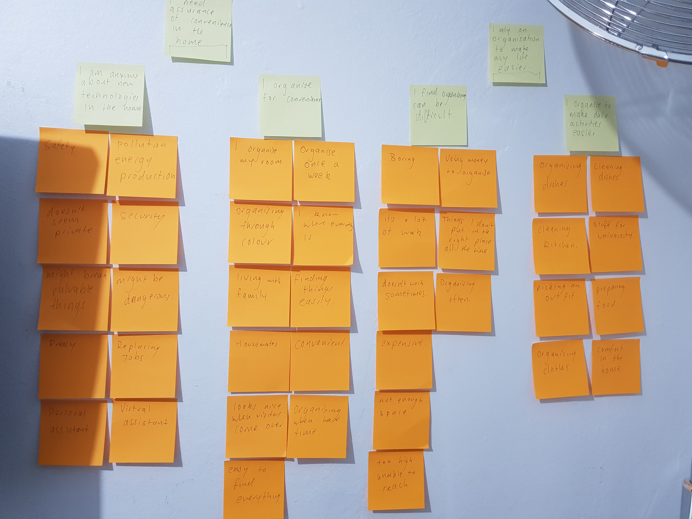
Affinity Diagramming

Making Personas
 >
>Storyboarding Use Case
For the introduction to DECO2200 I was thrown right back into the mindset of user based design, framed by the field of autonomous technologies, an interesting and nowadays prevalent field. The focus of the course was on the design process, and a great way to adhere to the process is keeping track of it in a journal like this one.
In the first tutorial we got into groups, I already knew one of my group members, Jake, as we had worked on group projects before and knew we could work well together, and we joined with our other group member, Gabrielle, who I had never worked with before. When forming the group, we spent a lot of time getting to know one another and working out our collective strengths and weaknesses, to figure out how the designation of work would go as well as things like availability.
Once the group was formed (we called ourselves Autonomous Anonymous (AA)) we started to think about the design brief and the area of interest presented. This lead to a lot of discussion over the last couple of weeks about the different applications that autonomous vehicles could be used for. After talking to our tutor Shane, we realised that we were way too focused on the actual functionality of the autonomous drone/vehicle, rather than solving a problem or creating an optimal solution for something, leading to us taking a step back and deciding to choose an area of interest in which we could introduce autonomous technology in a useful way.
This week we settled on how autonomous technologies could be used In the home and diverged with our own ideas to start work on our reports and user research. I focused on how people organise and manage their home environments, using a survey, interviews and contextual observations with some participants to figure out the pain points and areas of digress that people encountered. I found that people liked to keep things organised, but often were pressed for time or ability to get this done. When questioned about autonomous drones, people were generally open towards them but had concerns of privacy and security.
Through this user testing I uncovered some interesting insights, and also reinforced how important it is to ask questions in a more contextual and appropriate way when conducting interviews, as sticking to a script sometimes hinders the ability for participants to respond in a personal way. This week it came down to presenting my report and ideas to the tutors and other students, and I opted for a more casual presentation approach, without a thorough script, instead focusing on talking points in the presentation that I was confident in and felt proved important to my observations. The presentation went pretty well, with good feedback given on ways to make my presentation skills more engaging, as well as an interest in the results found. After doing this presentation I found that its not only what you say, but what is shown on screen that helps to get the point across in a successful way.
After this presentation, we decided as a group to go and begin to brainstorm ideas to move forward with.
In the first tutorial we got into groups, I already knew one of my group members, Jake, as we had worked on group projects before and knew we could work well together, and we joined with our other group member, Gabrielle, who I had never worked with before. When forming the group, we spent a lot of time getting to know one another and working out our collective strengths and weaknesses, to figure out how the designation of work would go as well as things like availability.
Once the group was formed (we called ourselves Autonomous Anonymous (AA)) we started to think about the design brief and the area of interest presented. This lead to a lot of discussion over the last couple of weeks about the different applications that autonomous vehicles could be used for. After talking to our tutor Shane, we realised that we were way too focused on the actual functionality of the autonomous drone/vehicle, rather than solving a problem or creating an optimal solution for something, leading to us taking a step back and deciding to choose an area of interest in which we could introduce autonomous technology in a useful way.
This week we settled on how autonomous technologies could be used In the home and diverged with our own ideas to start work on our reports and user research. I focused on how people organise and manage their home environments, using a survey, interviews and contextual observations with some participants to figure out the pain points and areas of digress that people encountered. I found that people liked to keep things organised, but often were pressed for time or ability to get this done. When questioned about autonomous drones, people were generally open towards them but had concerns of privacy and security.
Through this user testing I uncovered some interesting insights, and also reinforced how important it is to ask questions in a more contextual and appropriate way when conducting interviews, as sticking to a script sometimes hinders the ability for participants to respond in a personal way. This week it came down to presenting my report and ideas to the tutors and other students, and I opted for a more casual presentation approach, without a thorough script, instead focusing on talking points in the presentation that I was confident in and felt proved important to my observations. The presentation went pretty well, with good feedback given on ways to make my presentation skills more engaging, as well as an interest in the results found. After doing this presentation I found that its not only what you say, but what is shown on screen that helps to get the point across in a successful way.
After this presentation, we decided as a group to go and begin to brainstorm ideas to move forward with.
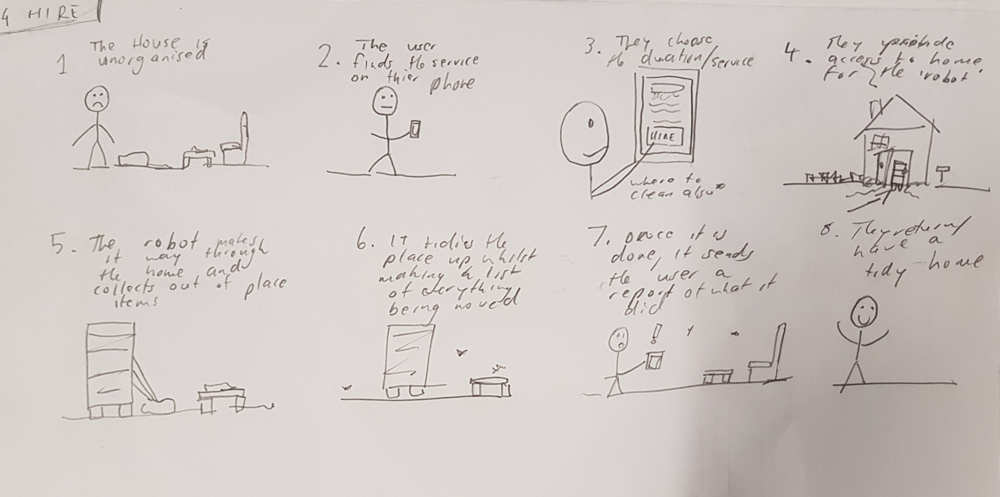
Our First Concepts
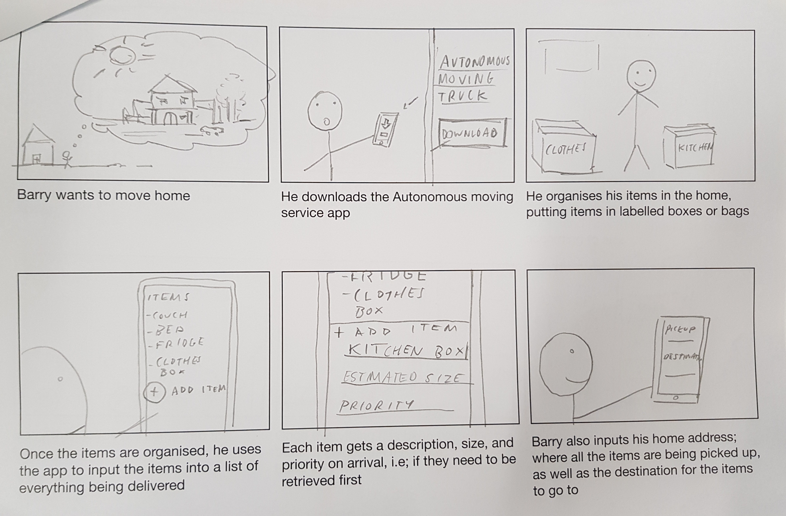
Changing Ideas
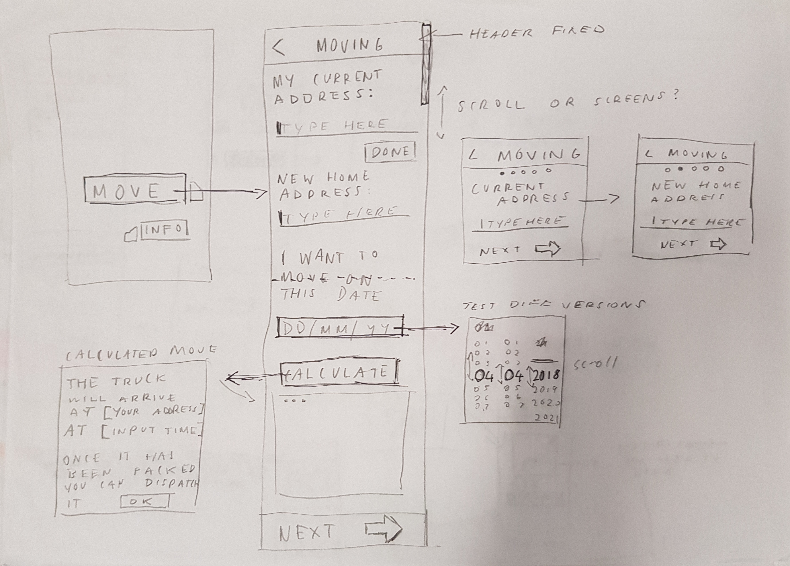
User Flow Sketching
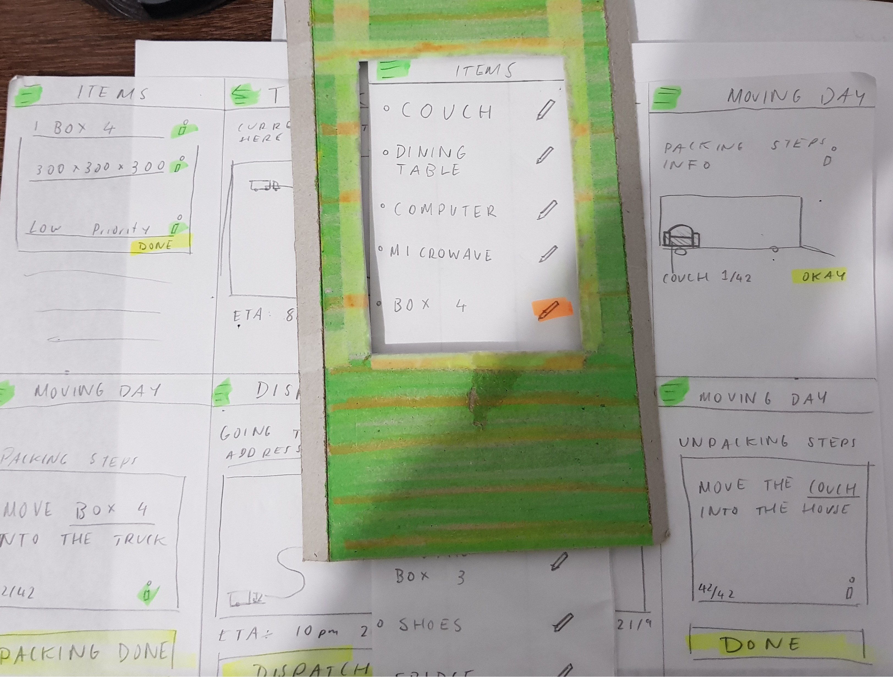
Paper Prototyping
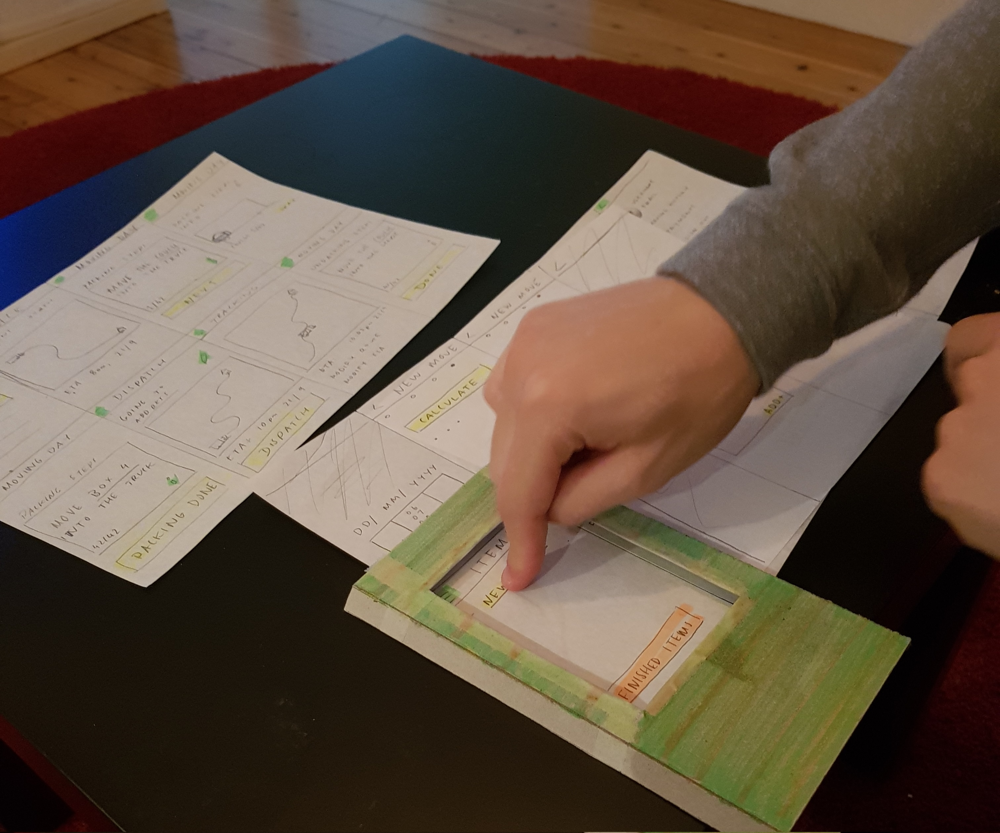>
User Testing
Moving into this week, we decided to combine the main ideas and results we each gained from our primary research, focusing on organisation and time management in the home, leading to some brainstorming and sketching done based on the idea of using an autonomous drone to organise and clean the home for a user. This idea is going to be what we each base our concepts on, as the next assessment requires us to come up with multiple ideas and test them all with participants. I made a storyboard and did sketches of a drone that would tidy up for the user to give them time in the day to do other things. We decided for this week to get the storyboards and concepts done to have a concrete way to present our ideas to our tutor next week.
Our new tutor, Christine, liked our ideas however felt that we should focus more on the autonomous vehicles side of it, as an interior drone system seemed a bit removed from the design brief. This lead us to pivot our ideas and research to use for applications of participants moving home, with each of us diverging to come up with multiple ideas we could focus on for this section of the task. Jake chose an idea based around moving home in multiple stages, to allow people that are busy or struggling for time to schedule multiple deliveries. Gabrielle went for a more complex approach, focusing on moving homes and delivering items from the home to other places they may need to go including donations, garbage removal, or storage. I decided to focus on a more simpler idea for my user research, storyboarding and sketching a preliminary idea for an autonomous moving truck that users can schedule to arrive and deliver at whatever time is best for them.
After the studio this week we went onto prototyping our ideas and sketching intefaces. I focused on making a phone application to schedule the autonomous truck, with some ideas for interface layouts and user flows being made. With the first paper prototype being made, I started to source some people to test it out, choosing two people that are due to move within the next couple weeks, as well as someone that has just moved not long ago. This should lead to some relevant observations or ideas that may help to improve the overall functionality and use of the design.
The paper prototype made here is a basic user flow of how the app would work, with the process started from signing up to actually scheduling the truck and moving home. It lets users catalogue their items to be moved, and uses a cardboard frame cut-out to emulate the screen of a phone. I tested this idea with my participants this week and overall had positive reception, with people telling me the overall user flow was really simple and easy to follow.
The important feedback lied within some options not being available, such as payment options, as well as functionality they wished was available such as more information or control over their items and their designations, things like item fragility or ability to support weight. These options will be all added in the next iteration.
Overall, from testing this idea, and observing the users as they spoke about and reacted to the interface, I realised the importance of not only taking what participants say at face value, but their immediate reactions to a new screen or situation as this painted a more important image of how people may react when left to their own devices, without someone there to answer their questions or guide them if they are lost.
Our new tutor, Christine, liked our ideas however felt that we should focus more on the autonomous vehicles side of it, as an interior drone system seemed a bit removed from the design brief. This lead us to pivot our ideas and research to use for applications of participants moving home, with each of us diverging to come up with multiple ideas we could focus on for this section of the task. Jake chose an idea based around moving home in multiple stages, to allow people that are busy or struggling for time to schedule multiple deliveries. Gabrielle went for a more complex approach, focusing on moving homes and delivering items from the home to other places they may need to go including donations, garbage removal, or storage. I decided to focus on a more simpler idea for my user research, storyboarding and sketching a preliminary idea for an autonomous moving truck that users can schedule to arrive and deliver at whatever time is best for them.
After the studio this week we went onto prototyping our ideas and sketching intefaces. I focused on making a phone application to schedule the autonomous truck, with some ideas for interface layouts and user flows being made. With the first paper prototype being made, I started to source some people to test it out, choosing two people that are due to move within the next couple weeks, as well as someone that has just moved not long ago. This should lead to some relevant observations or ideas that may help to improve the overall functionality and use of the design.
The paper prototype made here is a basic user flow of how the app would work, with the process started from signing up to actually scheduling the truck and moving home. It lets users catalogue their items to be moved, and uses a cardboard frame cut-out to emulate the screen of a phone. I tested this idea with my participants this week and overall had positive reception, with people telling me the overall user flow was really simple and easy to follow.
The important feedback lied within some options not being available, such as payment options, as well as functionality they wished was available such as more information or control over their items and their designations, things like item fragility or ability to support weight. These options will be all added in the next iteration.
Overall, from testing this idea, and observing the users as they spoke about and reacted to the interface, I realised the importance of not only taking what participants say at face value, but their immediate reactions to a new screen or situation as this painted a more important image of how people may react when left to their own devices, without someone there to answer their questions or guide them if they are lost.
Sketch - Design
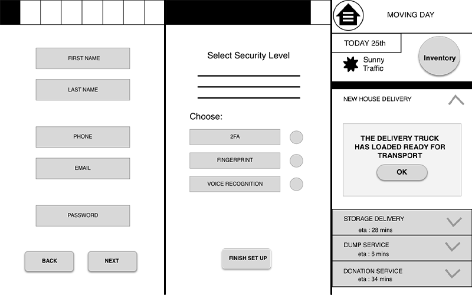
First Wireframes
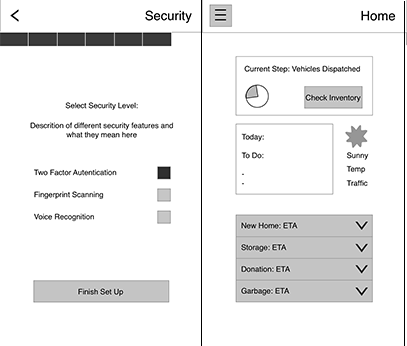
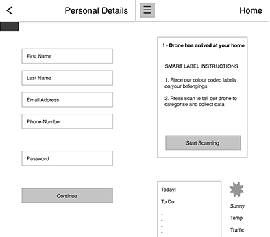
Second Wireframes
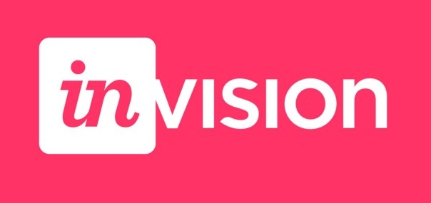
Prototyping Tool
 >
>Our Presentation
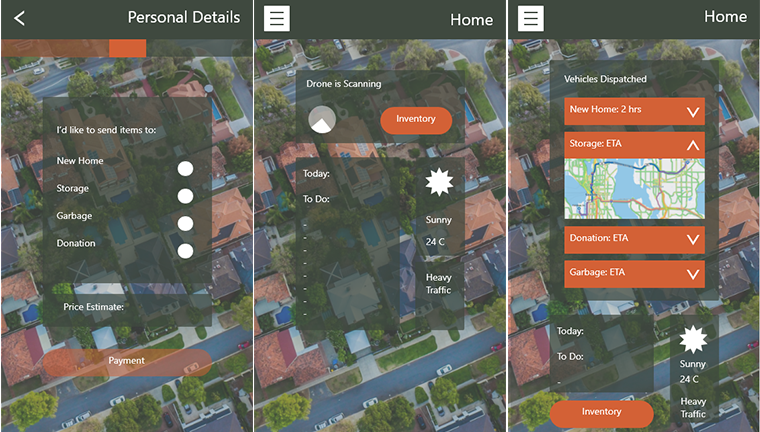>
First High Fidelity
>
Adobe XD - Animation
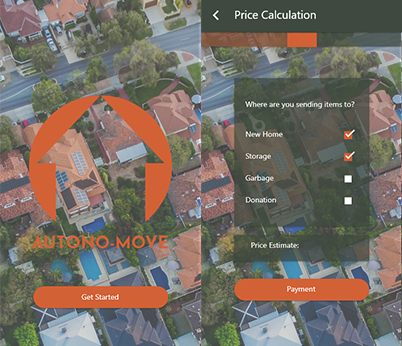
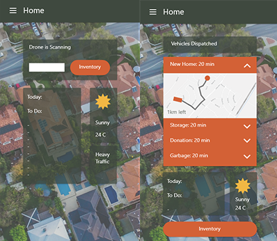>
Improved High Fidelity
This week we compared our results for each of our user testing, and also planned more user testing to occur. We also started to compile our results for referral when it came to constructing the report. So far as a group working together has been pretty seamless.
We also started to consider what idea we would focus on when it came to wire framing and testing out.
We met this week to work on the report, and decided to pursue Gabrielle’s concept of the multiple delivery designations, as it really fit well with our user feedback of control and personalisation when it came to how they like to move home. However, as Gabrielle’s idea was somewhat complex and the participants found it hard to follow the overall user flow, we decided to hone down the functionality of it and focus it into more of a journey rather than an all-encompassing service.
This did cause some contention between the three of us, and was once of the first major challenges we had to face as a group, decided what functions were important to the goal and what were somewhat redundant or too complex for users to really take advantage of. It did take us some time to address the different opinions we held, but overall at the end we reached what I felt was a healthy compromise between function for the user and a more friendly and intuitive flow for the design.
We then started to sketch user flows, and worked on putting together our first basic wireframes and invision prototype based on these sketches.
We met again after a couple days to talk about the results we gained from testing our invision prototype with our participants. Overall there were prominent issues to do with the clarity of the interface; users didn’t know what to press, what was interactive or not, and what the function of the app was overall. The limited scope of our interface in regards to the function we were tyring to present did not let us convey how in depth the application could be, as well as confusing and inconsistent icons and layout leaving users lost. This lead us to once again iterate on these wireframes, coming up with a second version that focused on consistency of interface elements and layout, to allow participants to hopefully use the system with greater ease.
The second prototype was a lot larger, with a ton of screens being made to give participants the range of interaction that allowed them to be more comfortable with the idea we were presenting. It proved to be a lot more user friendly, as the use of negative space and consistent elements were found approachable and familiar by participants. There were still some issues to be ironed out to do with some functions, however overall the flow of the prototype was found to be a lot more clearer.
Although this iteration was extremely work intensive, it proved to be fundamental for us in moving forward with our idea, as after the first version we were feeling disheartened with the overall functionality of what we were presenting. Doing this iteration allowed us to realise the importance of the application presentation and clarity of interaction elements.
Now that we had come away with a lot of new and interesting observations and feedback, we finalised our report and created a presentation, and we were well prepared to once again present to the tutors and students
The presentation was good, with some good feedback on our wireframes and ideas, however we did realise a few important ideas and aspects were left out which really would’ve brought it together. This will be important in the future not only in this course but any presentations I may be doing in other fields or work. It was also great to see the work other students had done, with a lot of great idea being shown.
This week we decided to focus on the wireframe feedback we got when moving into the high fidelity prototypes. We went through a different variety of colour palettes and did some research on colour theory before landing on a forest green/ orange red combination, with the green a strong and reliable colour, and the red a salient and striking colour for interaction elements. The we went into directly translating the wireframes we made into a higher fidelity representation.
I also put this new version on invision, and we ran it by a few users who really liked the layout. However there were some problems with elements we decided to use such as the back button and the menu button, with their proportions being a little off or strange. This was also pointed out to use by our tutor, who also suggested we look into designs and ideas for interfaces from other people online, to gather inspiration for ways that something simple like a map could be made more engaging for users.
After all this feedback, we did another iteration on our mockups, using things like shadows and different font sizes to step up the look of the design. After fiddling around with prototyping tools like Framer – which would not work, and Atomic, I settled on making our prototype with Adobe XD, as it was a software I had experience with, and with recent updates allows for simple animations and easy linking of elements in a way that other browser based alternatives did not. It also allowed me to work on the prototype from home.
The adobe XD prototype has come together nicely this past few days, with the prototype looking a lot better after our iteration from our tutors and participants suggestions. Even though the changes we made were ultimately small, they made a huge difference to the overall feel of the interface, which was hard for me to judge after looking at it for so long. Getting that fresh perspective was really important for me to realise this.
This week the prototype is due, and with the other guys working on presenting and documenting our ideas through the website, I’ve been updating animations and flow on the prototype to make it more engaging to use. Its been an interesting design challenge to make an application with the range of functionality and customisation that we have, but I feel that as a group we have really come together over the past few months to create something the people feel comfortable using, whilst giving them ultimately the control they need to feel secure with autonomous vehicles handling their goods.
As we come towards the due date for this task and this journal, I look back on all the work we did, the tons of hours put in together and sacrifices we each made in terms of social, work, and everyday life to pull together something I think we can all be proud of ,however that isn’t to say the idea has nowhere to go from here, in fact it can only be made better by more user testing and iteration, something that if this idea was ever to become a reality in the future, I feel would be fundamental in ensuring that potential users get the best experience they can when moving home.
We also started to consider what idea we would focus on when it came to wire framing and testing out.
We met this week to work on the report, and decided to pursue Gabrielle’s concept of the multiple delivery designations, as it really fit well with our user feedback of control and personalisation when it came to how they like to move home. However, as Gabrielle’s idea was somewhat complex and the participants found it hard to follow the overall user flow, we decided to hone down the functionality of it and focus it into more of a journey rather than an all-encompassing service.
This did cause some contention between the three of us, and was once of the first major challenges we had to face as a group, decided what functions were important to the goal and what were somewhat redundant or too complex for users to really take advantage of. It did take us some time to address the different opinions we held, but overall at the end we reached what I felt was a healthy compromise between function for the user and a more friendly and intuitive flow for the design.
We then started to sketch user flows, and worked on putting together our first basic wireframes and invision prototype based on these sketches.
We met again after a couple days to talk about the results we gained from testing our invision prototype with our participants. Overall there were prominent issues to do with the clarity of the interface; users didn’t know what to press, what was interactive or not, and what the function of the app was overall. The limited scope of our interface in regards to the function we were tyring to present did not let us convey how in depth the application could be, as well as confusing and inconsistent icons and layout leaving users lost. This lead us to once again iterate on these wireframes, coming up with a second version that focused on consistency of interface elements and layout, to allow participants to hopefully use the system with greater ease.
The second prototype was a lot larger, with a ton of screens being made to give participants the range of interaction that allowed them to be more comfortable with the idea we were presenting. It proved to be a lot more user friendly, as the use of negative space and consistent elements were found approachable and familiar by participants. There were still some issues to be ironed out to do with some functions, however overall the flow of the prototype was found to be a lot more clearer.
Although this iteration was extremely work intensive, it proved to be fundamental for us in moving forward with our idea, as after the first version we were feeling disheartened with the overall functionality of what we were presenting. Doing this iteration allowed us to realise the importance of the application presentation and clarity of interaction elements.
Now that we had come away with a lot of new and interesting observations and feedback, we finalised our report and created a presentation, and we were well prepared to once again present to the tutors and students
The presentation was good, with some good feedback on our wireframes and ideas, however we did realise a few important ideas and aspects were left out which really would’ve brought it together. This will be important in the future not only in this course but any presentations I may be doing in other fields or work. It was also great to see the work other students had done, with a lot of great idea being shown.
This week we decided to focus on the wireframe feedback we got when moving into the high fidelity prototypes. We went through a different variety of colour palettes and did some research on colour theory before landing on a forest green/ orange red combination, with the green a strong and reliable colour, and the red a salient and striking colour for interaction elements. The we went into directly translating the wireframes we made into a higher fidelity representation.
I also put this new version on invision, and we ran it by a few users who really liked the layout. However there were some problems with elements we decided to use such as the back button and the menu button, with their proportions being a little off or strange. This was also pointed out to use by our tutor, who also suggested we look into designs and ideas for interfaces from other people online, to gather inspiration for ways that something simple like a map could be made more engaging for users.
After all this feedback, we did another iteration on our mockups, using things like shadows and different font sizes to step up the look of the design. After fiddling around with prototyping tools like Framer – which would not work, and Atomic, I settled on making our prototype with Adobe XD, as it was a software I had experience with, and with recent updates allows for simple animations and easy linking of elements in a way that other browser based alternatives did not. It also allowed me to work on the prototype from home.
The adobe XD prototype has come together nicely this past few days, with the prototype looking a lot better after our iteration from our tutors and participants suggestions. Even though the changes we made were ultimately small, they made a huge difference to the overall feel of the interface, which was hard for me to judge after looking at it for so long. Getting that fresh perspective was really important for me to realise this.
This week the prototype is due, and with the other guys working on presenting and documenting our ideas through the website, I’ve been updating animations and flow on the prototype to make it more engaging to use. Its been an interesting design challenge to make an application with the range of functionality and customisation that we have, but I feel that as a group we have really come together over the past few months to create something the people feel comfortable using, whilst giving them ultimately the control they need to feel secure with autonomous vehicles handling their goods.
As we come towards the due date for this task and this journal, I look back on all the work we did, the tons of hours put in together and sacrifices we each made in terms of social, work, and everyday life to pull together something I think we can all be proud of ,however that isn’t to say the idea has nowhere to go from here, in fact it can only be made better by more user testing and iteration, something that if this idea was ever to become a reality in the future, I feel would be fundamental in ensuring that potential users get the best experience they can when moving home.
Contact
dmus2778@uni.sydney.edu.au
contact.dominicmusolino@gmail.com
contact.dominicmusolino@gmail.com